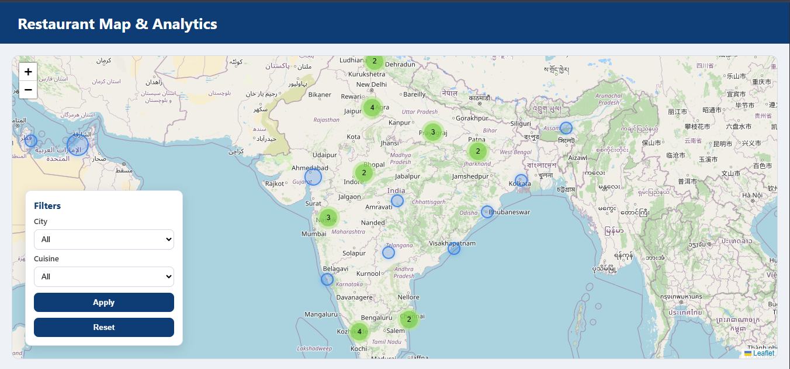
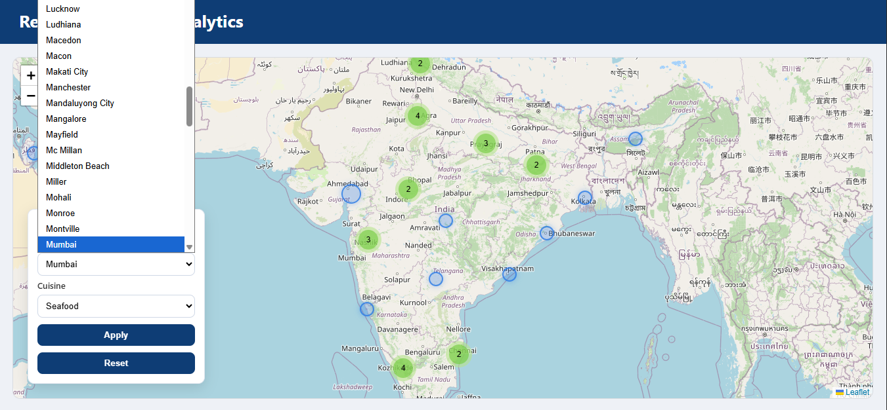
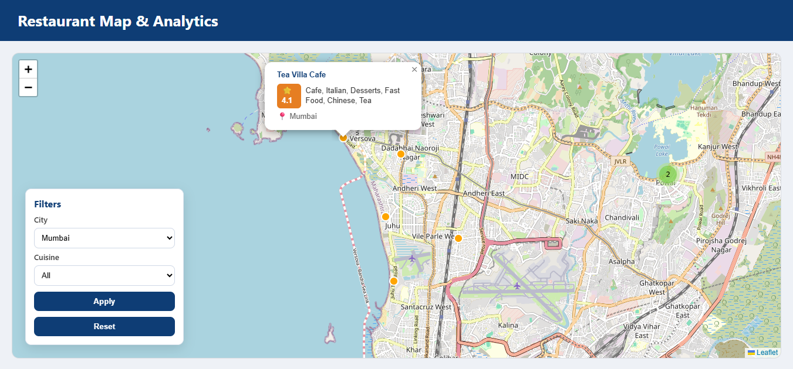
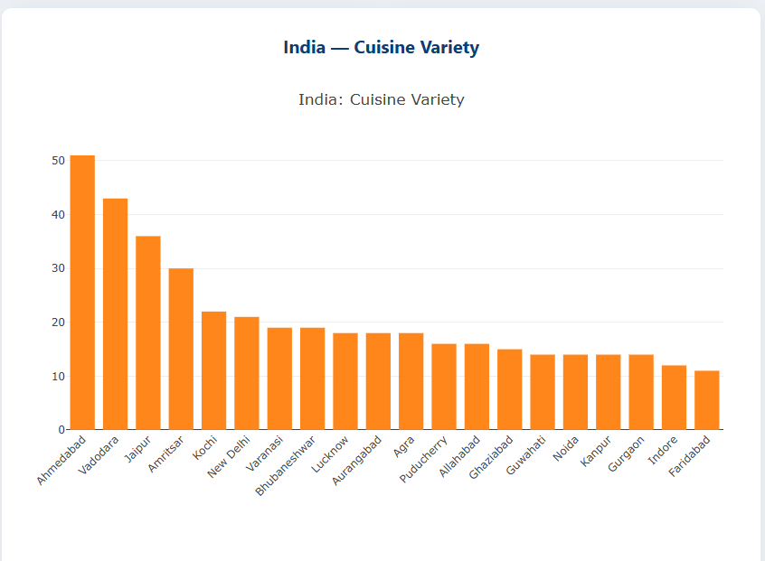

Vishal Akale
Home
Projects
Skills
Experience
Contact
Restaurant Map & Analytics Dashboard
Python & Geo
Tools
Python
Flask
Pandas
NumPy
Leaflet.js
Plotly
Highlights
Geospatial clustering
City & cuisine filters
Data cleaning & UTF-8 normalization
Role Mapping
Data Analyst: Regional analysis
Python Developer: Backend pipelines
AI/ML: Spatial pattern thinking
Project Screenshots
   
← Back to Projects